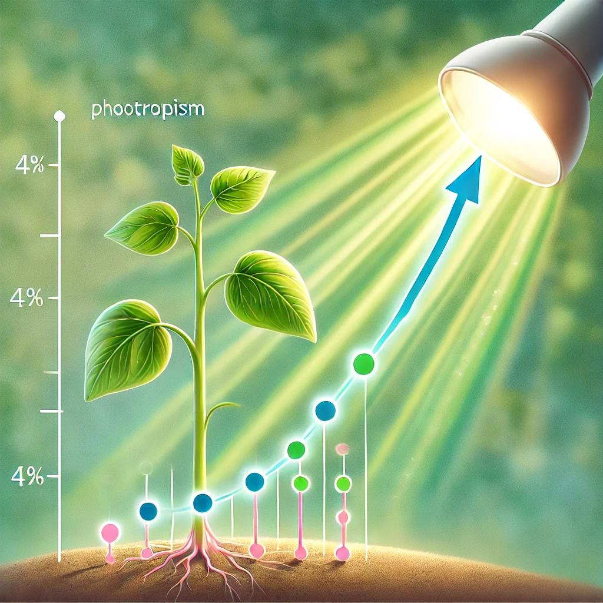
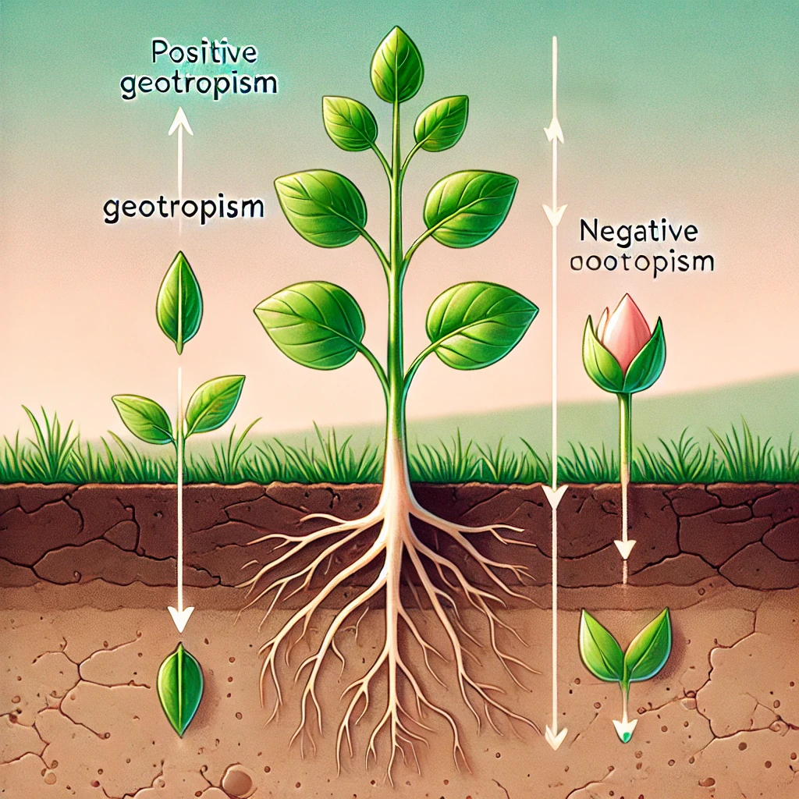
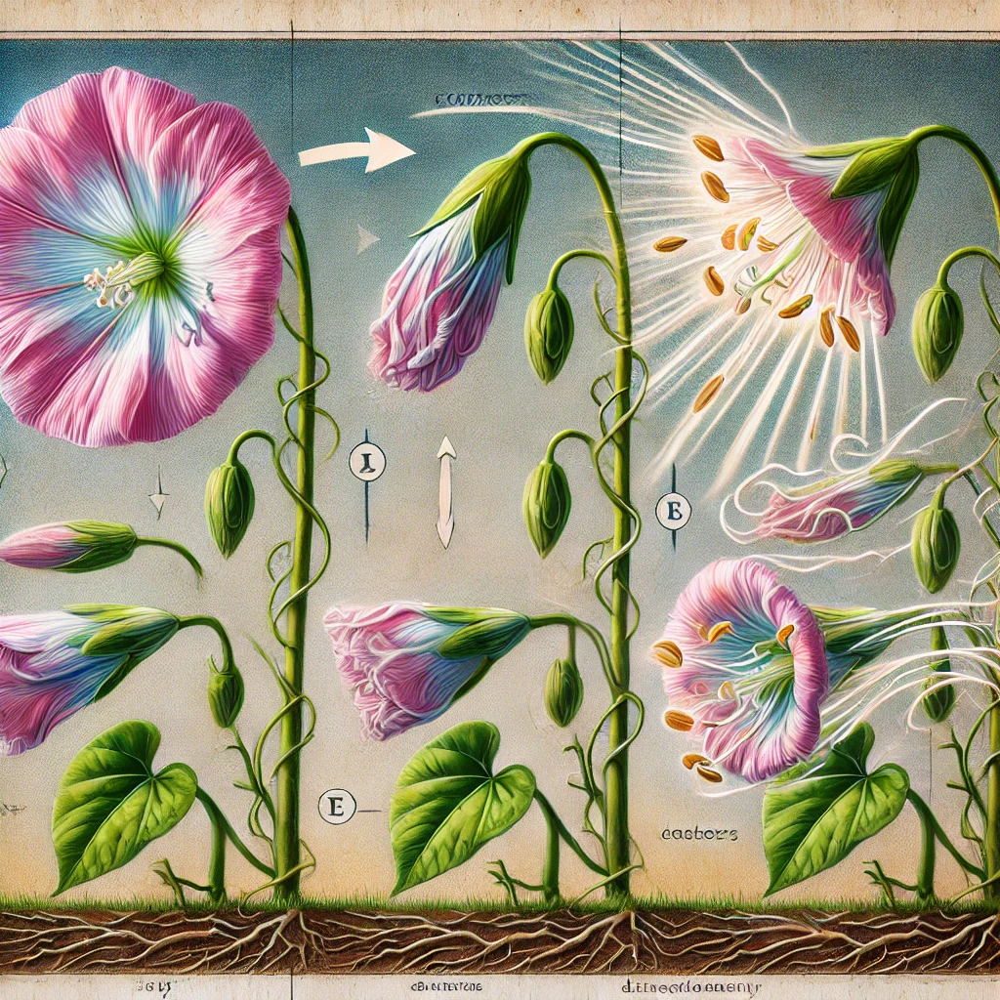

Tropizmlar - o'simliklarning tashqi omillarga javoban yo'naltirilgan o'sish harakatlaridir. Ular atrof-muhit sharoitlariga moslashishda muhim rol o'ynaydi.
O'simliklar atrof-muhit omillariga moslashish uchun har xil harakat turlariga ega. Tropizmlar o'simliklarning o'sish jarayonida muhim o'zgarishlarga sabab bo'ladi.
Bu taqdimotning maqsadi - tropizmlarning o'simlik hayotidagi ahamiyatini tushuntirish va ularning turli xil omillarga qanday moslashishini ko'rsatish.
Fototropizm - o'simliklarning yorug'lik manbasiga yoki undan uzoqlashishga yo'naltirilgan harakatidir. Masalan, quyosh nuri ta'sirida o'simlik poyalari yorug'likka qarab o'sadi. Bu jarayon fitogormonlar, ayniqsa auksinlar yordamida boshqariladi.
Geotropizm - o'simliklarning tortish kuchiga nisbatan yo'naltirilgan harakatidir. Ijobiy geotropizm - ildizlarning yerga qarab o'sishi, salbiy geotropizm esa poya va barglarning yuqoriga qarab o'sishidir.
Fotonastiya - o'simliklarning yorug'lik ta'sirida sodir bo'ladigan harakatlaridan biridir. U fototropizmdan farqli ravishda, harakatning yo'nalishi yorug'lik manbasiga bog'liq emas. Masalan, gul barglarining kun davomida ochilib-yopilishi fotonastiyaga misol bo'la oladi.
Tropizmlar va nastiyalar o'simliklarning yashash sharoitlariga moslashishiga yordam beradi. Ular fotosintez jarayonini optimallashtirish, suv va oziq moddalar ta'minotini yaxshilash uchun muhimdir.
Fototropizm, geotropizm va fotonastiya kabi jarayonlar o'simliklar hayotida muhim rol o'ynaydi. Ular atrof-muhit bilan o'zaro ta'sirni yaxshilashga yordam beradi.
O'simliklarning harakatlanish mexanizmlarini yanada chuqur o'rganish uchun biologiya darsliklaridan, ilmiy maqolalardan va tadqiqotlardan foydalanish mumkin.